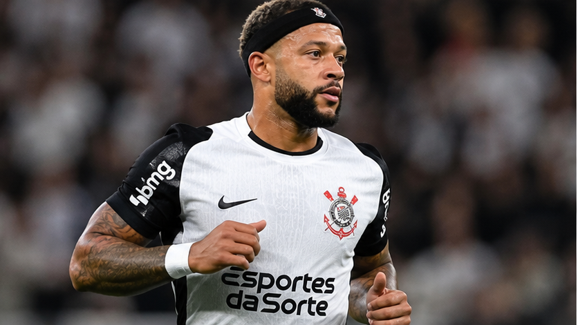

Memphis Depay pode voltar contra o São Paulo? Seedorf explica previsão
Atacante segue fora contra o Mirassol, e comissão técnica trabalha com possibilidade de retorno no clássico de 4 de novembro.

O que se sabe sobre a recuperação
Memphis Depay não estará disponível para enfrentar o Mirassol nesta sexta-feira (30). O atacante se recupera de um edema muscular na parte posterior da coxa direita e vem sendo acompanhado pela equipe médica do Corinthians.
Clássico é uma possibilidade, não garantia
Em entrevista coletiva na quinta-feira (29), Clarence Seedorf afirmou que o clube trabalha com a possibilidade de contar com Memphis no clássico contra o São Paulo, marcado para quarta-feira (4), na Vila Belmiro.
O treinador fez uma ressalva importante: o retorno depende da evolução física do atleta e será avaliado diariamente. A comissão técnica não quer antecipar etapas e aumentar o risco de nova lesão.
A Fiel aguarda o camisa 10
Em uma reta final de Brasileirão que exige pontos, o retorno de Memphis pode ampliar as opções ofensivas. Mas a prioridade é que ele volte em condições de contribuir. Você escalaria o atacante assim que estiver liberado?
Notícia publicada em 30/10/2026. Informações sujeitas a atualização.